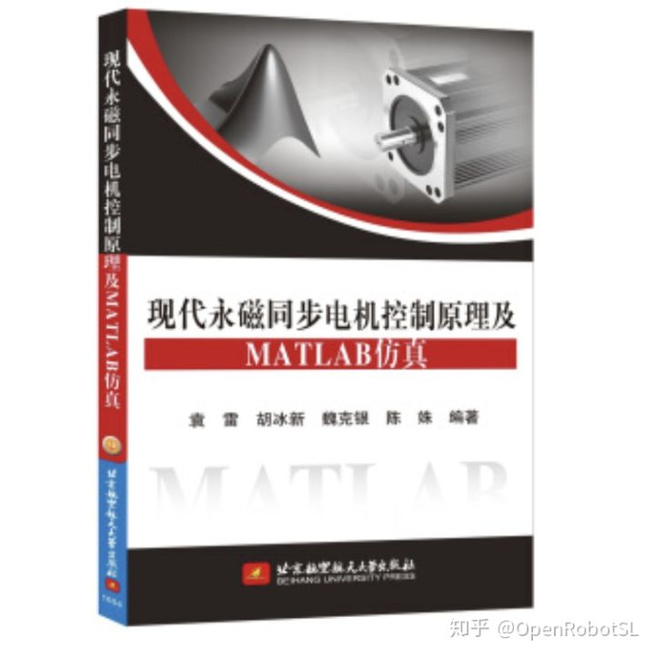

Home
本文转载自： https://zhuanlan.zhihu.com/p/265931068
本彩笔只是了解过和跑过仿真代码，目前协作机械臂主流伺服方案就是低压伺服FOC控制，所以想以后从事这方面的童鞋需要好好学学哦。
这里给新手推荐书籍和代码哈
永磁同步电机(PMSM)的FOC闭环控制详解以及SVPWM的原理及法则推导和控制算法_nobita的天地-CSDN博客代码OpenRobotSL/PMSM_FOC



======================================================================
我的测试结果及程序
下面是我测试的代码：